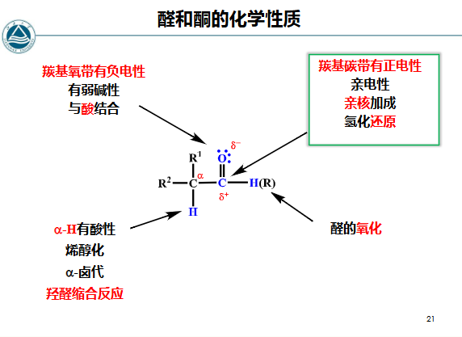

第八章 醛酮
章节概览
- 8.1 羰基的结构、分类与物理性质（ 杂化、偶极矩、沸点/溶解度）
- 8.2 醛酮的命名规则（系统命名、普通命名、IUPAC 后缀）
- 8.3 羰基亲核加成概述与机理（电子效应、立体化学、活性顺序）
- 8.4 含碳亲核试剂（格氏试剂、Li 试剂、炔基钠、Reformatsky、HCN、Wittig）
- 8.5 含氧亲核试剂（水合、缩醛/酮、保护基）
- 8.6 含硫亲核试剂（亚硫酸氢钠、硫缩醛与脱羰）
- 8.7 含氮亲核试剂（氨/胺、羟胺、肼、苯肼、氨基脲；Schiff 碱、Beckmann 重排、烯胺）
- 8.8 -H 反应（卤化、卤仿反应）
- 8.9 羟醛缩合及相关人名反应（Aldol、Claisen-Schmidt、Perkin、Mannich）
- 8.10 氧化反应（Tollens、Fehling、Baeyer-Villiger）
- 8.11 还原反应（催化加氢、、Clemmensen、Wolff-Kishner/黄鸣龙、Meerwein-Ponndorf、Cannizzaro）
- 8.12 -不饱和醛酮的 1,2-与 1,4-加成、醌简介
- 8.13 醛酮的制备方法
- 8.14 鉴别反应汇总与易错点
- 8.15 与生物工程的联系（糖、辅酶、转氨、视觉、生物合成）
学习目标（重点）
- 掌握羰基的电子结构（ 杂化、 键、偶极）与醛酮的分类命名规则
- 理解羰基亲核加成反应机理、电子效应与立体化学（Cram 规则）
- 掌握各类亲核试剂（C/O/S/N）的加成产物与应用（缩醛保护、Schiff 碱、Wittig、氰醇）
- 掌握 -H 反应（酸/碱催化卤化、卤仿反应、羟醛缩合）及相关人名反应
- 掌握醛酮的氧化（Tollens/Fehling 鉴别、Baeyer-Villiger）与各类还原方法的适用范围
- 理解 -不饱和醛酮的 1,2-加成与 1,4-共轭加成（Michael 加成）
- 理解醛酮化学在糖代谢、辅酶还原、转氨、视觉等生物过程中的体现
一、醛酮的结构、分类与物理性质
参考资料：有机化学8-1醛酮8-1 20260508.pdf | 有机化学8-1全-醛酮8-1 20260514.pdf
1.1 羰基的结构特征 加成
(1) C=O 双键与 杂化
羰基结构（Carbonyl Structure）
羰基碳以 3 个 杂化轨道分别与 O 及两侧取代基形成 3 个 键，处于同一平面，键角约 ；剩余的未杂化 p 轨道与氧的 p 轨道侧面重叠形成 键。因此羰基 C 与 O 及两取代基共平面，C=O 双键由一个 键加一个 键组成。
极化与反应性
由于氧的电负性（3.5）远大于碳（2.5）， 电子云向氧偏移，使羰基具有强偶极矩（）：碳带部分正电荷 、氧带部分负电荷 。
羰基碳是亲电中心，易被亲核试剂进攻；这是醛酮全部亲核加成反应的根源。共振结构 表明羰基具有”碳正离子—氧负离子”的极化极限式。
(2) 醛酮的分类
分类
- 醛（Aldehyde）：羰基碳至少连一个 H，通式 （甲醛 为最简单醛）。
- 酮（Ketone）：羰基碳连两个烃基，通式 。
- 按烃基结构：脂肪族（aliphatic） 芳香族（aromatic，如苯甲醛 ）；饱和 不饱和；按羰基数：一元、多元醛酮。
1.2 物理性质
物理性质（Physical Properties）
- 极性大、偶极-偶极作用强：醛酮沸点高于同碳数烷烃、醚，但低于能形成氢键的醇（自身不能给氢，只能受氢）。
- 水溶性：低级醛酮（甲醛、乙醛、丙酮）能与水完全互溶（羰基氧接受水分子氢键）；随碳数增大溶解度下降。
- 气味：低级醛有刺激味，低级酮有香味；天然芳香醛（香草醛、肉桂醛）具特征香气。
| 物质 | 沸点 / | 水溶性 |
|---|---|---|
| 甲醛 | （气体） | 互溶 |
| 乙醛 | 互溶 | |
| 丙酮 | 互溶 | |
| 苯甲醛 | 微溶 |
二、命名规则 命名
命名规则
- 简单醛：同醇的命名；芳香醛把 -Ar 看作取代基（如苯甲醛）
- 简单酮：XX 酮，两个 X 是酮羰基左右的基团；一个 -Ar 一个 -R 则命名为酰基苯
- 系统命名（IUPAC）：选主链，从靠近羰基一侧开始编号，写取代基，标羰基位置；官能团优先级：醛 酮 醇 卤素 硝基 不饱和烃；环上羰基碳在环内为环 X 酮，在环外则把环作为取代基
- 后缀：醛用 -al（如 propanal 丙醛），酮用 -one（如 propan-2-one 丙酮）；多元醛/酮用 -dial / -dione；羰基作取代基时用 oxo-（羰基）、formyl-（醛基）
命名示例
- ：丙醛（propanal）
- ：丙酮（propan-2-one / acetone）
- ：苯甲醛（benzaldehyde）
- ：苯乙酮 / 1-苯乙酮（acetophenone，酰基苯）
- ：己二醛（hexanedial）
化学性质分析

结构-反应性总览
羰基的两条主要反应脉络：① 羰基亲核加成（ 的 键打开，Nu 加到 C 上）；② -H 活泼性（羰基吸电子使 -H 酸性增强，可被碱夺取形成烯醇盐）。此外还有氧化、还原与歧化。
三、反应
3.1 羰基的亲核加成 加成
(1) 反应原理与机理概述
机理要点
亲核试剂（）进攻带 的羰基碳， 电子完全转移到 O 上形成四面体氧负离子中间体 ，再经质子化得产物。酸性条件下 O 先质子化、活化羰基碳再受进攻；碱性条件下 Nu 直接进攻。
(2) 与格氏试剂反应 人名反应
立体化学
酮的赤式和苏式遵循 Cram 规则：羰基处于 M 和 S 两个基团中间，Nu 从 S 基团一侧进攻羰基碳（位阻小）立体选择性 赤式与苏式 术语
(3) Cram规则 人名反应
核心内容
与格氏试剂加成时，羰基处于 M（大基团）和 S（小基团）两个基团中间，亲核试剂从 S 基团一侧进攻羰基碳，因为位阻小。立体选择性
(4) 活性顺序
醛 酮，-R -Ar
原理：EWG 增强活性，EDG 减弱活性（-Ar 通过共轭向羰基供电子，降低羰基碳正电性）；芳香酮 脂肪酮（位阻）。立体位阻：支链越多活性越低（如叔丁基酮极不活泼）。
记忆
活性：；本质是”羰基碳正电性 + 空间可接近性”。
(5) 与Li试剂反应
如果格氏试剂位阻太大，可以用 Li 试剂代替；也需要水解才能变成醇 控pH反应。有机锂亲核性/碱性均强于格氏试剂。
(6) 与炔基钠反应
可以制备炔醇，后续同样要酸性水解 控pH反应
(7) Reformatsky反应 人名反应
特点
(8) 与 HCN 反应（氰醇 / Cyanohydrin）
生成 -羟基腈（氰醇）：
- 酸性水解 → -羟基酸
- 浓硫酸脱水 → -不饱和羧酸 控pH反应
- 注意：HCN 剧毒、挥发性强，实验室现配现用（），必须碱催化（ 才是真正的亲核试剂）
(9) 与 反应
白色沉淀，反应可逆；在酸、碱环境下加热均可分解回到原来的醛酮，可用于提纯与分离醛酮（仅醛、甲基酮及 8 碳以下环酮反应）。
3.2 含氧亲核试剂 控pH反应
(1) 与水反应（水合 / Hydration）
生成偕二醇（gem-diol / 水合物）；平衡通常偏向醛酮一侧。若羰基连强 EWG（如 水合氯醛、）则形成稳定偕二醇；甲醛在水中几乎全以水合物 形式存在。
(2) 与醇的加成 控pH反应
要点
- 经半缩醛（酮）→ 缩醛（酮），总反应两分子醇失一分子水
- 酸必须是无水酸（如 气体、、TsOH）Ts
- 在稀酸水溶液中，缩醛/酮会重新水解为原来的醛酮 — 这一可逆性是保护基应用的基础
- 缩醛对碱、亲核试剂、还原剂稳定，故可作羰基保护基
(3) 醇加成的特殊应用（保护基）
- 末端羟基酮可自身加成成环状半缩醛/酮
- 与二醇（如乙二醇）成环状缩酮保护醛酮，见屏幕截图 2026-05-30 122303.png
{kind=link}
保护策略
在复杂合成中，先用乙二醇 + 酸把 保护为环状缩酮，再进行其他位置反应（还原、强碱处理），最后稀酸水解脱保护恢复羰基。糖类（葡萄糖）在溶液中以环状半缩醛形式存在即为此类平衡。
(4) 硫缩醛与脱硫（Raney Ni 脱羰的等价还原）
含硫亲核试剂
醛酮与硫醇 在酸催化下生成硫缩醛/酮 （相当于缩醛的硫类似物）。硫缩醛对酸、碱均稳定，且可被 Raney Ni 脱硫得到 （把羰基彻底还原为 ）：
这是除 Clemmensen、Wolff-Kishner 之外第三种”羰基→亚甲基”的方法，条件温和。
3.3 含氮亲核试剂 控pH反应
(1) 与氨和衍生物的反应 控pH反应
催化条件
用弱酸催化（如 ，pH ≈ 4–5）；用强酸会和 N 结合，失去 Nu 性。
{kind=link}
(2) 氨衍生物反应产物与鉴别
重要鉴别试剂
这些产物多为结晶固体、有明确熔点，常用于醛酮的鉴定（衍生化法）。
| 试剂名称 | 试剂结构 | 产物名称 | 产物结构 |
|---|---|---|---|
| 羟胺（Hydroxylamine） | 肟（Oxime） | ||
| 肼（Hydrazine） | 腙（Hydrazone） | ||
| 苯肼（Phenylhydrazine） | 苯腙（Phenylhydrazone） | ||
| 氨基脲（Semicarbazide） | 缩氨脲（Semicarbazone） | ||
| 伯胺（1° Amine） | 亚胺 / Schiff 碱（Imine） |
Schiff 碱特点
芳香亚胺比较稳定（ 共轭）。许多生物分子识别、辅酶 PLP 反应均经 Schiff 碱中间体。
(3) Beckmann 重排 人名反应
重排规则
- 迁移基团规则：与 -OH 处于**反式（anti）**的基团迁移到 N 上，生成酰胺
- 迁移基团若具手性，重排后构型保持不变 立体选择性
- 机理见屏幕截图 2026-05-30 125657.png
- 应用：环己酮肟 → 己内酰胺（caprolactam）→ 尼龙-6 单体，工业意义巨大
{kind=link}
(4) Schiff 碱的性质 人名反应
| 性质 | 说明 |
|---|---|
| 水解 | 容易被稀酸水解，可以保护醛基 控pH反应 |
| 还原 | 可以用 和 Pd 作 Cat. 还原，制备二级胺（）还原 |
(5) 与仲胺的加成脱水反应（烯胺 / Enamine）
生成烯胺：-H 脱去，仲胺的 H 脱去，CO 的 O 脱去生成水，-C 与羰基 C 生成 ，且仲胺的 N 连在原羰基 C 上。需 -H 才能形成。
{kind=link}
(6) 烯胺的双重亲核性
此时 （-碳）可被 E 试剂取代，比如 的 ， 则和 成盐。烯胺是羰基的”极性反转（umpolung）“等效物，使羰基 -位成为亲核中心，是重要的合成方法。
3.4 Wittig 反应 人名反应
(1) Wittig 试剂的制备
磷叶立德（Phosphorus Ylide）： 生成鏻盐，然后在强碱（NaH / n-BuLi / PhLi）作用下夺 形成 ： 并且还会生成双键（叶立德/叶立因共振）：
易错点
强碱是夺取 -碳上的 （不是夺取 ），生成碳负离子型叶立德。原文若写”夺 “为错误。
(2) 反应方程式
常用于合成烯烃，双键位置确定、无重排，是构建 的关键方法。
(3) 机理
[!note] 机理
叶立德碳负离子进攻羰基碳 → 形成四元环氧膦丁环（oxaphosphetane）中间体 → 协同分解为烯烃 + （强 P=O 键是反应推动力）。立体化学受叶立德稳定性影响：稳定叶立德多给 (E)-烯烃，非稳定叶立德多给 (Z)-烯烃。
{kind=link}
(4) 常用亲核试剂
{kind=link}
3.5 -H 反应
(1) 酸性来源
被碱拔 H，生成 （烯醇盐 enolate）并能烯醇互变；若连接 EWG 则 -H 酸性增强。所以 这类 1,3-二羰基结构都有活泼的 -H（如各种羧酸衍生物含二羰基结构的类型， 可降至 9–13）。
烯醇化
酸/碱均可催化互变异构；烯醇（enol）是 -取代、卤化、缩合反应的活性物种。
(2) 卤化反应 控pH反应 控温
机理与控制
酸催化下可以控制在一卤代阶段：一卤代后 -C 上 -X 为吸电子基，使烯醇化变慢，故可停留在单卤代。
{kind=link}
(3) 卤仿反应 立体选择性 控pH反应
特点
- 碱催化下，进攻位阻小的 -H，难以控制在一卤代物，连续卤化完全变成
- 为卤仿；用 和 NaOH 反应，生成碘仿 亮黄色沉淀，是鉴别甲基酮 / 乙醛的经典反应
- 注意：卤素有氧化性，故具 （仲醇）结构时会先被氧化为 ，再进行卤仿反应
- 卤仿反应可用于减短碳链（甲基酮 → 少一碳羧酸）
易错
产物是 （三卤甲基），卤仿通式 ，X 的数目必须明确为 3。
3.6 羟醛缩合 加成
又称为 Aldol 缩合 人名反应
(1) 反应式 控pH反应 控温
定义
在稀碱或稀酸催化下，含有 -氢原子的醛或酮结合在一起，生成 -羟基醛或酮（Aldol，醛醇），加热脱水得 -不饱和醛酮。
(2) 机理
碱催化：碱夺取 -H 得烯醇盐 → 烯醇盐碳负离子进攻另一分子羰基碳 → 氧负离子质子化得 -羟基羰基 → 脱水（E1cb）得共轭烯酮。
{kind=link}
(3) 特点
一个是醛（后续变成 ，即提供羰基被进攻），一个是有 -H 的醛酮（脱去 -H，保留羰基）；后续羟基脱水变成不饱和双键。脱水产物因形成 共轭体系而稳定。
(4) 甲醛的应用
如果用甲醛，可以引入 （甲醛无 -H，只能作受体被进攻，不会自身缩合）。
(5) Claisen-Schmidt 缩合 人名反应
芳醛与含 -H 的醛或酮在碱性条件下反应脱水生成 -不饱和醛或酮；芳醛无 -H 仅作受体，避免混合缩合的复杂性 控pH反应
(6) Perkin 反应 人名反应
特点
(7) Mannich 反应 人名反应
特点
- 含有 -活泼氢的化合物（如酮）与醛及胺之间发生的三组分缩合反应，生成 -氨基羰基化合物（Mannich 碱）
- 使用甲醛时可在酮的 位引入一个胺甲基（胺甲基化反应）
- 原理：Aldol 缩合加上胺取代羟基（亚胺离子 作亲电体）控pH反应
生工联系
莨菪碱的生物合成即经 Mannich 反应；许多生物碱骨架由 Mannich 缩合构建。
3.7 氧化反应 氧化
(1) 温和氧化剂（鉴别反应） 人名反应
| 试剂 | 组成 | 说明 |
|---|---|---|
| Tollens 试剂 | （银氨溶液） | 氧化醛基为羧酸，本身被还原为银镜 — 醛专属鉴别（脂肪/芳香醛均反应） |
| Fehling 试剂 | + 酒石酸钾钠 + NaOH（铜氨溶液） | 仅氧化脂肪醛为羧酸， 砖红色沉淀；芳香醛不反应 |
鉴别口诀
醛 → Tollens 银镜（+）；脂肪醛 → Fehling 砖红（+），芳香醛 → Fehling（−）；酮 → 两者均（−）。
(2)
不氧化双键，只氧化醛基。用于不饱和醛选择性氧化为不饱和酸。
(3) 强氧化剂
| 试剂 | 反应式 | 特点 |
|---|---|---|
| 醛基在 -Ar 上时条件不能太剧烈 控温 控pH反应 | ||
| 或冷稀 | 氧化芳香醛 控温 控pH反应 | |
| 强氧化剂（含 ） | 氧化酮；氧化环酮可制取二元羧酸（如环己酮 → 己二酸，尼龙-66 原料） |
(4) Baeyer-Villiger 氧化重排 人名反应
核心内容
酮被过氧酸氧化成酯：
要点
- 过氧酸可用：（MCPBA 常用）、、
- 醛发生此反应生成羧酸
- 为迁移基团，会在羰基 C 和 之间插入一个 O
- 迁移顺序： 环己基
- 迁移基团手性不变 立体选择性
3.8 还原反应 还原
| 还原方法 | 反应式 | 特点 |
|---|---|---|
| 催化加氢 | 生成醇；同时还原 C=C、 等不饱和键；催化剂 | |
| 生成醇，不还原 C=C / ；还原能力 ；前者还可还原羧酸/酯/酰胺及 ，后者只还原醛酮（及酰氯） | ||
| Meerwein-Ponndorf 还原 人名反应 | 异丙醇作还原剂、异丙醇铝催化；逆反应为 Oppenauer 氧化；异丙醇过量走 M-P 还原，丙酮过量走 Oppenauer 氧化；专一还原羰基，不影响双键 | |
| 金属的酮双分子还原 | 还原为邻二叔醇（频哪醇 pinacol）；还原剂：Na、Mg、Al 或 Mg-Hg、Al-Hg；非质子性溶剂 | |
| Clemmensen 还原 人名反应 | 把醛酮还原成烷基（）；酸性条件，不适于对酸敏感的底物 | |
| Wolff-Kishner 还原 人名反应 | 还原为烷基；脱氮气；碱性高温条件 控pH反应 脱气体 | |
| 黄鸣龙还原 人名反应 | W-K 还原的改进，常压回流更安全 脱气体 | |
| Cannizzaro 反应 人名反应 | 无 -H 的醛 + 甲醛：一个被还原成醇，一个被氧化成羧酸（歧化）控pH反应 |
还原方法选择对比
- 还原到醇：（温和、选择性高）首选；（强力、广谱）；催化加氢（同时还原不饱和键）
- 还原到 ：Clemmensen（耐酸）/ 黄鸣龙（耐碱）/ 硫缩醛-Raney Ni（中性）三选一，依底物稳定性
- 专一还原羰基不碰双键： 或 Meerwein-Ponndorf
易错点
- 不能还原酯/羧酸/酰胺， 能 — 这是考查重点
- Cannizzaro 反应前提是无 -H 的醛（如苯甲醛、甲醛、叔丁醛），否则优先发生羟醛缩合
3.9 -不饱和醛酮 加成

加成类型
共轭体系 存在 1,2-加成（进攻羰基碳）与 1,4-加成（进攻 -C，即共轭加成 / Michael 加成）两种方式。酸催化和碱催化机理不同 控pH反应：
| 条件 | 加成位置 | 机理图 |
|---|---|---|
| 酸催化 | Nu 加在 -C 上 | 屏幕截图 2026-05-31 104115.png |
| 弱碱催化 | Nu 加在 -C 上 | 屏幕截图 2026-05-31 104130.png |
| 强碱催化 | 在 1,2 位加成（可能出现两种产物） | 屏幕截图 2026-05-31 104439.png |
{kind=link}
{kind=link}
{kind=link}
1,2- vs 1,4-加成规律
- 强亲核试剂 / 体积小的试剂（如 中 ）→ 倾向 1,2-加成（动力学控制）
- 弱亲核试剂 / 共轭稳定产物（如 （Gilman 试剂）、、胺、硫醇）→ 倾向 1,4-加成（热力学控制，迈克尔加成 Michael addition）
- 1,4-加成产物烯醇式互变后恢复羰基，形式上看 Nu 加在 -C、H 加在 O 上
3.10 醌简介 氧化
醌（Quinone）
醌是具有共轭环己二烯二酮结构的化合物，最常见为对苯醌（1,4-苯醌）与邻苯醌（1,2-苯醌）。醌不是芳香族化合物（无芳香性），但醌/氢醌构成经典可逆氧化还原对：
- 醌易发生 1,4-加成（共轭加成），化学性质类似 -不饱和酮
- 生物体内辅酶 Q（泛醌 ubiquinone） 参与线粒体电子传递链，维生素 K（萘醌衍生物）参与凝血，均依赖醌/氢醌氧化还原循环
四、醛酮的制备
| 方法 | 反应式 | 说明 |
|---|---|---|
| 醇催化脱氢 | 等催化剂；工业制甲醛/乙醛 控温 | |
| 氢甲酰化反应 | 可能在 上醛基，比例少 控温 | |
| 烷基苯的氧化 氧化 | 控制氧化避免过度氧化为酸 | |
| 醇氧化 氧化 | 见醇酚醚的氧化部分 | Sarrett 试剂、Jones 试剂、Oppenauer 氧化，R 可以不饱和 控pH反应 |
| 羧酸衍生物还原 羧酸及其衍生物 | - | 酰氯还原、酯还原、Rosenmund 还原 控pH反应 控温 |
| F-C 酰基化 人名反应 | 见芳烃和芳香性 | |
| Gattermann-Koch 反应 人名反应 | 用 CO 和 HCl 与芳烃作用生成芳醛 | |
| 炔烃水合 | 见不饱和烃和共轭体系，得甲基酮（马氏规则） |
五、鉴别反应汇总与易错点
5.1 醛 vs 酮鉴别反应对照
| 反应 / 试剂 | 脂肪醛 | 芳香醛 | 酮 | 备注 |
|---|---|---|---|---|
| Tollens 银镜 | + 银镜 | + 银镜 | − | 鉴别醛与酮 |
| Fehling 砖红 | + | − | − | 鉴别脂肪醛与芳香醛 |
| 沉淀 | + | +（部分） | +（甲基酮/小环酮） | 分离提纯 |
| 2,4-二硝基苯肼（2,4-DNP） | + 黄–红沉淀 | + | + | 醛酮通用鉴别 |
| 卤仿 | +（乙醛） | − | +（甲基酮） | 鉴别 / |
| 品红-亚硫酸（Schiff 试剂） | + 紫红 | + 紫 | − | 醛显色 |
5.2 易错点小结
常见错误
- Wittig 叶立德制备：强碱夺 -碳上的 （非 ），生成 。
- Reformatsky 产物：羟基连在原羰基碳，应写 。
- Beckmann 重排：与 -OH 反式的基团迁移（非任意基团），构型保持。
- 卤仿反应：三卤甲基 （X 数为 3），产物 。
- vs ：前者只还原醛酮，后者还能还原酯/羧酸/酰胺/。
- Cannizzaro：必须无 -H 的醛；有 -H 的醛在碱中走羟醛缩合而非歧化。
- 缩醛保护：缩醛对碱稳定、对稀酸水解 — 与”无水酸生成、稀酸分解”配套记忆。
六、与生物工程的联系
羰基化学是生命过程的"反应引擎"
糖代谢、能量转换、氨基酸合成、视觉传导等几乎都围绕羰基的亲核加成、亚胺（Schiff 碱）形成、氧化还原与羟醛缩合展开。
(1) 糖：醛糖与酮糖 / 半缩醛
- 醛糖（aldose）：开链含醛基，如葡萄糖（glucose，己醛糖）；酮糖（ketose）：含酮基，如果糖（fructose，己酮糖）。
- 在水溶液中，糖的羰基与分子内羟基发生亲核加成形成环状半缩醛/半缩酮（吡喃环/呋喃环），产生新的手性异头碳（ 异头物）— 正是”醇→半缩醛”反应在分子内的体现。
- 变旋光（mutarotation）： 异头物通过开链醛式互变达到平衡。
(2) 辅酶 NAD⁺/NADH：生物体内羰基还原
- / 是脱氢酶的辅酶，本质是以吡啶环为电子受体。 把氢负（）转移给底物羰基，将其还原为醇 — 等价于生物版的 ” 还原”。
- 典型例子：丙酮酸 → 乳酸 （乳酸脱氢酶，LDH，糖酵解/无氧呼吸）；乙醛 → 乙醇（乙醇脱氢酶 ADH，发酵）。
- 相反方向（醇 → 醛/酮 + ）即生物氧化，对应”Oppenauer 氧化”的酶促版本。
(3) 转氨作用（PLP）与氨基酸代谢
- 磷酸吡哆醛（PLP） 是转氨酶的辅酶，其醛基与氨基酸的 -氨基形成 Schiff 碱（亚胺） 中间体，经质子转移、水解完成氨基与酮基的交换：氨基酸 + -酮酸 ⇌ -酮酸 + 氨基酸。
- 关键 -酮酸：丙酮酸、-酮戊二酸、草酰乙酸 — 它们都是代谢枢纽中的酮酸（含羰基）。
- 这一过程本质是”羰基↔亚胺↔新羰基”的可逆转化，与含氮亲核试剂加成完全对应。
(4) 羟醛缩合在代谢中：醛缩酶（Aldolase）
- 糖酵解中醛缩酶（aldolase） 催化果糖-1,6-二磷酸（F-1,6-BP）逆羟醛缩合裂解为甘油醛-3-磷酸（GAP，醛糖）+ 二羟丙酮磷酸（DHAP，酮糖）；糖异生中再正向缩合。
- 这是 Aldol 反应最负盛名的生物实例：酶用赖氨酸侧链形成 Schiff 碱活化底物（I 类醛缩酶）或用金属离子活化（II 类醛缩酶）。
(5) 视黄醛与视觉：Schiff 碱与光异构化
- 11-顺-视黄醛（11-cis-retinal） 的醛基与视蛋白（opsin）中赖氨酸的 -氨基缩合形成 Schiff 碱，构成视紫红质（rhodopsin）。
- 吸收光子后 11-顺 → 全-反异构化，触发构象变化并启动视觉信号级联；随后水解释放全-反视黄醛，再经酶促异构化回到 11-顺循环使用。
- 整个过程是”醛基 + 胺 → Schiff 碱”在生物信号转导中的直接应用。
(6) 维生素 C 与醌型氧化还原
- 维生素 C（抗坏血酸 ascorbic acid） 是内酯并具烯二醇结构，易失去 2 个电子氧化为脱氢抗坏血酸（二酮内酯），二者构成可逆氧化还原对，维持机体抗氧化能力。
- 辅酶 Q（泛醌） 通过醌/氢醌（quinone/hydroquinone）氧化还原循环在线粒体呼吸链中传递电子；维生素 K（萘醌类）参与凝血因子的羧化。这些均属羰基/醌体系的氧化还原化学。
(7) 羰基亲核加成在生物合成中的意义
- TPP（硫胺素焦磷酸） 的噻唑环通过去质子化形成亲核碳负离子（ umpolung，极性反转），进攻 -酮酸（如丙酮酸）实现脱羧 — 与 HCN/氰醇化学异曲同工。
- 柠檬酸循环中多种转化（如草酰乙酸与乙酰 CoA 缩合生成柠檬酸）经亲核加成构建 C–C 键。
- 总结：羰基既是亲电中心（受亲核试剂进攻，C–C 键形成）又是氧化还原枢纽，是细胞合成与能量代谢的核心官能团。
知识检查
AI 认为 需要修正的内容：
- “Wittig 试剂制备中，强碱夺 ” → 应为”强碱夺 “，生成 ，原文错误地写为夺 。（已在 3.4 修正）
- “Reformatsky 反应产物 ” → 结构应更准确表示为 ，表示羟基连在原来的羰基碳上。（已在 3.1-(7) 修正）
- “Beckmann 重排中 为迁移基团” → 更准确地说，是与 -OH 处于反式的基团迁移，不一定是 ，取决于肟的构型。（已在 3.3-(3) 修正）
- “卤仿反应中 ” → 应为 （三卤甲基），n 应明确为 3。（已在 3.5-(3) 修正）
相关笔记
- 命名 — 有机化合物命名规则
- 术语 — 有机化学常用术语表
- 羧酸及其衍生物 — Reformatsky 反应、羧酸衍生物还原
- 醇酚醚 — Oppenauer 氧化
- 卤代烃 — 格氏试剂与酮的反应
- 不饱和烃和共轭体系 — 炔烃水合生成酮
- 芳烃和芳香性 — F-C 酰基化反应
- 胺及杂环化合物 — Mannich 反应、Cannizzaro 反应
整理自：课堂笔记及参考课件